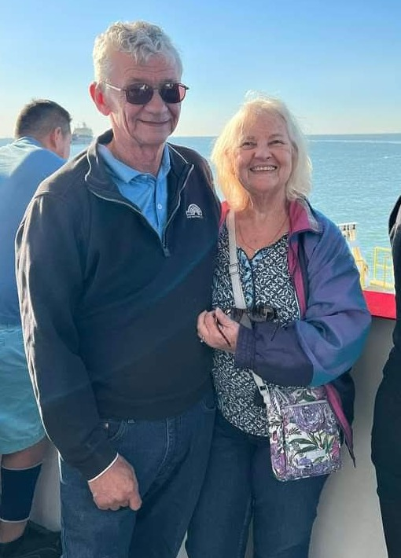

Neighbor Story · Chandler
A Council Member With A Heart For Chandler
Council Member Bob Valliere on building on the work of those who came before, and why Chandler is still a city with a heart

In a small town, it's natural for neighbors to see things differently from time to time. But the things Chandler shares run deeper: a library its people chose to invest in, a park full of families every evening, and neighbors who show up with a meal when someone is hurting. Whatever neighbors' views on city issues, there's a lot Chandler shares.
So maybe this is a good season for a fresh start. That could mean a phone call to an old friend, a handshake after a meeting, or a thank-you to someone who served before. It could mean picking up a shared hope. Past leaders, present leaders and residents alike all have a seat at the table, because everyone at that table loves the same town.
One of the newest people at that table has been part of the town for a long time.
Meet Bob Valliere
Chandler City Council Member Bob Valliere calls himself a Yankee by birth. He and his wife, Donna, were both born in the Boston area, but Chandler has been his home for 45 years.
"But I've been in Chandler for 45 years now," Valliere said. "So I consider myself a naturalized Texan."
Valliere had a career with Aetna Life & Casualty. He said that career brought him to Tyler in 1981 to open a new service center, where he was the first employee. By his account, it grew to about 400 people at its peak. Over the years he took an interest in city affairs, especially the city's finances.
On May 2, 2026, Chandler voters chose three council members for two-year terms, and Valliere was one of them. Chandler is a general-law city, and its five aldermen are all elected at large. Valliere serves alongside Mayor Cy Ditzler, Mayor Pro Tem Milton Wallace, and Council Members Angie Saxon, Patrick Hadnot and Kelly Smith.
Building on the work of those who came before
Valliere was quick to honor the councils and city leaders who served before him.
"I have to give credit to our predecessors," he said. He explained that much of what Chandler is seeing now was planted years ago: "Some of the things that are actually hitting the ground now are things that the seeds began two or three years ago."
Backup generators. The generator project began about two years ago under prior leadership. It is a Hazard Mitigation Grant Program project administered by the Texas Division of Emergency Management, and it puts backup generators at the wastewater treatment plant, three lift stations and five water wells. That way, water and sewer service can keep running during a power outage. Valliere said the federal grant was "just under a million dollars," with the city matching about 10%. He said the project was about three-quarters complete, with a target finish around the end of the year.
Wastewater clarifier. Former City Administrator Kalon Rollins saw the need to repair one of the two clarifiers at the wastewater plant, which Valliere called essential. Valliere said Rollins secured a grant of about three-quarters of a million dollars for the work. Valliere said the project is expected to be finished in November.
Storm sirens. Residents asked for storm sirens, and the city went after grant funding to provide them. When the first grant fell short of the full cost, the city applied for more. That request was approved, and a vendor has been chosen. One siren is planned for the north side of town and one for the south, with installation expected by the end of the year. Valliere said the sirens can also detect lightning within 10 miles. "It'll set off the alarm so we can vacate the park," he said.
The library. In May 2024, Chandler voters and the council of that time put a $2.5 million library expansion bond on the ballot and approved it. Valliere also credited the prior administration for bringing the city's audits current, which cleared the way for the city to borrow the money. "They got them current," he said. Today the city is working with the architects on the best way to deliver the expansion within the amount voters approved.
"I think it's a credit to the people in the town that they're willing to spend money on a library," Valliere said. "Home schoolers use it quite a bit."
The Chandler Public Library has been accredited by the Texas State Library and Archives Commission since 2011. That's no small thing for a small-town library. To keep it, the library must stay open at least 20 hours a week, employ a library director at least 20 hours a week, maintain a collection of at least 7,500 items, meet minimum local funding levels, and keep up its local support from year to year. Accreditation opens the door to statewide interlibrary loan, TexShare databases and state grant programs.
Listening and working together
Valliere said the council's job is to serve as the city's governing body, working hand in hand with city staff. He praised City Administrator Joseph Yazdanpanahi, whom Valliere said the council recently voted to make permanent, as "very organized," and described the relationship as one of teamwork.
"And it's very much teamwork," he said.
Looking ahead, Valliere said Yazdanpanahi is working with department heads to give them more ownership of their budgets. "He's been working with the department heads to better define their roles as department heads," Valliere said. Valliere described the approach this way: "You developed a budget and you have this much money to spend, just do it wisely."
Valliere said Yazdanpanahi, whom he described as having a background in technology for cities, has also made security improvements to the city's IT systems. "And so he's made a lot of changes to our technology," Valliere said.
The council puts in long hours, including one meeting he described that lasted six hours, and its members are not paid for their service.
"We're going to do what it takes," he said. "And if it takes having two meetings a month or four meetings a month or one six-hour meeting a month, whatever it takes, that's what we're committed to."
Residents are invited in. "Lots of people reach me via messenger," Valliere said, referring to Facebook Messenger. Council members can also be reached by email; Valliere's address is council4@chandlertx.com. Or residents can call City Hall at 903-849-6853. "They can call City Hall and leave a message for us and we'll call them back."
Council meetings are live streamed on the city website with closed captioning, so neighbors who can't attend in person can still follow along.
Good news for residents
On Sept. 29, the council unanimously adopted the fiscal 2026-27 budget. It lowers the city property tax rate to $0.486284 per $100 of valuation, which is the no-new-revenue rate. Water and trash rates stay the same, and city employees get a 5% cost-of-living raise. Valliere said the city also found room to add a patrol officer position to strengthen night coverage.
"Yeah, I think most of the feedback we're getting is positive," Valliere said. "People are seeing things happening."
Growing together
Chandler is growing. Census Bureau estimates put the city at 4,081 residents as of July 1, 2025, up from a July 2020 estimate of 3,277. That is roughly 25% growth in five years.
The city's existing comprehensive plan has guided it for years. Now Chandler is building on that foundation with a new 10-year plan. Valliere said it kicked off in October and is targeted for completion in April 2028. A water master plan is also getting under way.
Valliere is enthusiastic about Heart of Chandler, the development planned on Hwy 31. He said it will be "very beneficial to the city in terms of sales tax revenue and property tax and just to draw for people to come in to see." For more on the project, read our earlier story, Phones are ringing in Chandler, and everyone’s talking about Chapter 11.
Winchester Park, home of the Chandler Pow Wow, is what Valliere said most people consider "the gem of the city." Austin Ramirez, director of the Chandler Sports Association, is excited about upgrading the fields for the tournaments that bring visitors to town.
A legacy for the next generation
Valliere said he turned 80 the same month he was elected, and he plans to serve a single term.
"And so what's driving me is I want to get as much done as I can get done in the next 18 months," he said.
He sees the new comprehensive plan as a gift to the future: "I kind of see that as something that I leave behind for the city."
A city with a heart
Chandler's slogan is "City with a Heart," and Valliere says the town lives up to it. When a neighbor is hurting, he said, "the community comes together and they help." He said that happens quietly, often without making the news.
"I believe we are a city with a heart," Valliere said. "And I just think that we can do better when we're working together."
Past councils planted the seeds. Today's leaders are tending them, and every neighbor has a part in what grows next. Valliere's words carry an invitation: come to a meeting, send a message, lend a hand. May Chandler keep its heart open, its neighbors close, and its best days ahead.
Kickapoo Kolache welcomes all Chandler council members to share their priorities in future issues.
Did You Know?
- Your meetings are open, and you can speak. Under the Texas Open Meetings Act, every regular, special or called meeting must be open to the public (Gov't Code §551.002). Residents may address the council on any agenda item, before or during its consideration (§551.007).
- Agendas are posted ahead of time, and meetings stream live. Cities with a website must post meeting notices online (§551.056), and Chandler posts its agendas, along with live streams and past meetings at chandlertx.com/777/City-Council-Board-Meetings.
- Public records belong to the public. The Texas Public Information Act (Gov't Code ch. 552) gives everyone the right to request city records. Start with the City Secretary at City Hall.
- Every council member represents you. Chandler is a general-law city. With no wards, state law provides for a mayor and five aldermen elected by all the city's voters (Local Gov't Code §22.031(b)), each serving a two-year term (§22.035). See the city's election page.
- What "no-new-revenue rate" means. It's the rate that raises the same amount of property tax revenue from the same properties as the year before (Tax Code §26.04(c)(1); plain-language wording from §26.06(b-1)). Chandler adopted that rate, $0.486284, for 2026-27.
- Help from the state. The Texas Division of Emergency Management administers the Hazard Mitigation Grant Program behind Chandler's backup generators. The Texas State Library and Archives Commission accredits public libraries like Chandler's (13 Tex. Admin. Code §1.76).
- Reach out. Email Council Member Valliere at council4@chandlertx.com, or call City Hall at 903-849-6853.